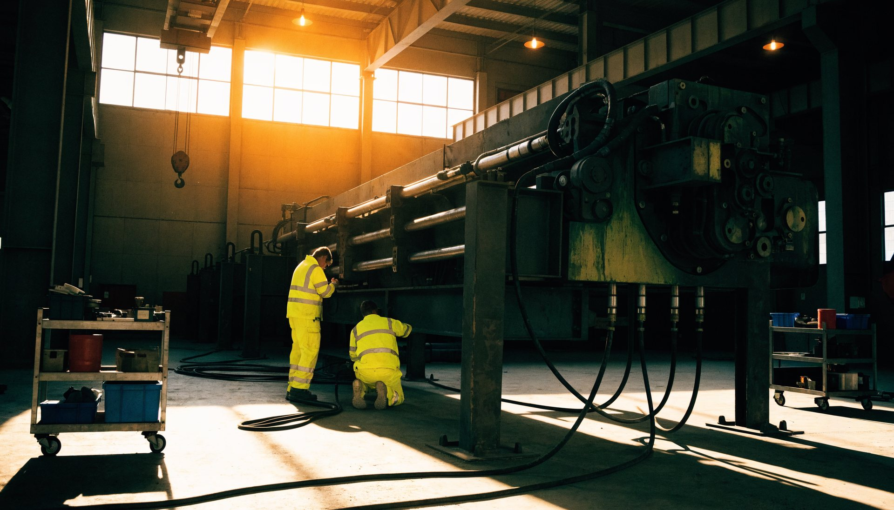
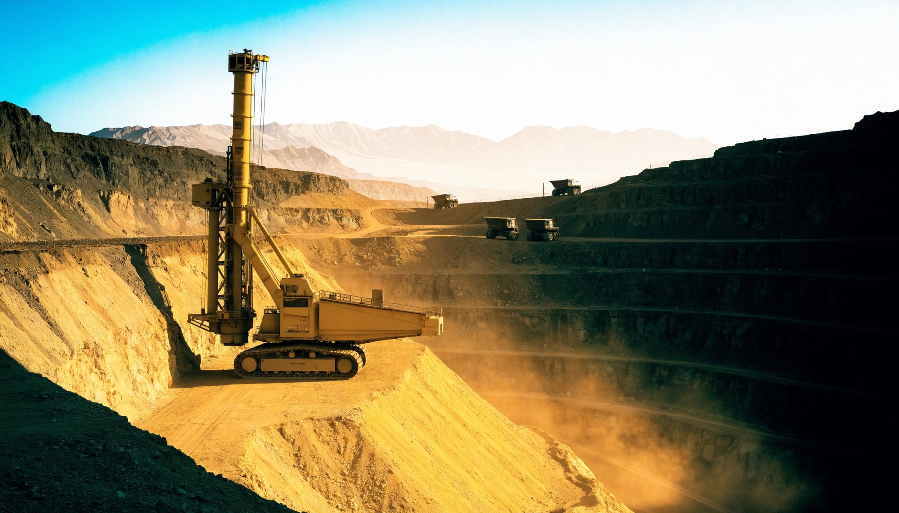

Repuestos originales, OEM y alternativos para equipos mineros, con respaldo técnico y reparación hidráulica en nuestro propio taller. Más de 20 años en la minería.

Reparación integral de perforadoras Epiroc COP 1238, 1838, 1840 y SC25 y Tamrock HL500, HL510 y HLX5. También modelos Montabert y otros equipos equivalentes.

Bombas hidráulicas de distintos fabricantes, brazos completos para jumbos y perforadoras y unidades de rotación de equipos Boomer. Con foco en continuidad operacional y respuesta oportuna.
Todas nuestras reparaciones pasan por rigurosos controles de calidad en un banco de pruebas hidráulico de alto rendimiento: resultados confiables, seguros y trazables para cada componente intervenido.

Minería del cobre a rajo abierto y subterránea: roca abrasiva, operación 24/7, altura y faenas remotas. Minería de sal y salinas: humedad, corrosión y material particulado. Ahí ponemos stock y criterio técnico para elegir según urgencia, criticidad y presupuesto.